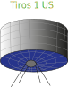

Første objekt i rummet

I Oktober...
sender U.S.S.R (Union of Soviet Socialist Republics) det første
menneskeskabte objekt ud i jordens kredsløb, Sputnik 1. Allerede
en måned efter sender de Sputnik 2 afsted med hunden Laika om
bord.
USA's første satelit
U.S sender deres første... satellit Explorer 1 ud i Januar og opdager jordens rotationsbælte. I Oktober opretter U.S - NASA (National Aeronautics and Space Administration) og får sendt Pioneer 1 ud i rummet hvor den når en højde på 113,780621 kilometer.
1958Sovjetunionen sender Luna mod månen

Luna 1 udsendt af U.S.S.R i Januar har til mål at...
komme i månens kredsløb, men ender istedet med at blive den første satellit der kommer i kredsløb om solen.
I marts sender U.S Pioneer 4 ud og kommer ind for 59,545728 kilometer af månen.
Kapløbet fortsætter og i september sender Sovjetunionen Luna 2 ud, med en kopi af The Soviet Coat Of Arms (Sovjets nationalvåben) og bliver de første til at ramme ind i månen.
I oktober sender de Luna 3 afsted. På missionen lykkedes det at tage billeder af 70% af månens bagside.
Den første vejrsatellit

Vejrsatellitten Tiros 1 bliver ...
sendt ud af U.S. Dette er den første vejrsatellit i rummet. Tiros programmet var et eksperimentelt NASA projekt for at finde ud af om satelitter kunne bruges til at studere jorden. Programmet var en succes og i 1962 blev data fra Tiros 1 brugt af meterologer i hele verden.
De første mennesker i rummet

Sovjetunionen bliver de første til at ...
sende det første menneske i rummet. Det sker i April 1961, hans navn er Yuri Gagarin og det er ombord på fartøjet Vostok 1.
I disse år (februar 1962) får U.S også sendt den første amerikaner i rummet, John Glenn.
Det lykkedes også at få den første live-satellit Telstar 1 i kredsløb om jorden. Den amerikanske Mariner 2 bliver det første rumfartøj til at flyve forbi planten Venus.
I 1963 bliver Sovjet astronauten Valentina Tereshkova den første kvinde i rummet. Hun var deroppe i 48 timer.
De første skridt taget i rummet

Den første til at gå i rummet blev...
den sovjetiske astronaut Aleksey Leonov. Dette skete i marts. Han var ude af fartøjet i 12 minutter.
Amerikanerne følger trop og i Juni bliver Edward White den første amerikaner til at gå i rummet. Han var ude af fartøjet i 22 minutter.
Starten på udforskning af planeter
I juli måned modtager man...
de første nærbilleder af Mars. Disse er taget af det amerikanske fartøj Mariner 4.
I November sender Sovjetunionen skibet Venera 3 afsted for at udforske Venus’ overflade. Kursen er sat forkert og første forsøg mislykkedes. Kursen bliver ændret og i december kolliderer Venera 3 med Venus.
Tættere på månen

Det lykkedes i februar for...
den sovjetiske Luna 9 at lande blødt på månen. I marts sender de Luna 10 afsted og denne gang lykkedes det at komme i kredsløb om månen.
U.S følger trop og i juni lykkedes det også det amerikanske fartøj Surveyor 1 at lave en blød landing på månen. Kort efter lykkedes det også U.S at få Lunar Orbiter 1 i månens kredsløb. Lunar Orbiter 1 bliver den første til at tage billeder af jorden fra sådan en afstand.
Første dødsfald i rummet

Den sovjetiske astronaut...
Vladimir Komarov var den første til at omkomme i rummet. Komarov var chefpilot på Voskhod 1, den første flermandsbesætning i rummet.
På sin anden rumflyvining, i Sojuz 1, omkom han, da faldskærmen fejlede under landingen. Rumflyvningen havde været ramt af mange problemer og tragisk var det da Sojuz 1 styrtede til jorden.
De første bemandede månemissioner
Zond 5 bliver sendt ud af sovjetunionen og bliver...
det andet sovjetiske fartøj til at komme i kredsløb om månen og det første der kommer sikkert tilbage igen. Zond 5 transporterede de første jordiske organismer i nærheden af Månen, herunder to skildpadder, frugt, flueæg og planter.
U.S bliver de første der forsøger en bemandet månemission med skibet Apollo 7 under rumprogrammet Apollo. Månelanding modulet var dog ikke medbragt og Apollo 7 vendte tilbage 11 dage efter.
Et par måneder efter lykkedes det Apollo 8 at komme i kredsløb om månen, dette som den første bemandede rumraket.
“Et kæmpe spring for menneskeheden”
1969 var et begivenhedernes år for rummissionerne....
1969 var et begivenhedernes år for rummissionerne. I januar blev Soyuz 4 og 5 de første 2 rumraketter hvor man fik en astronaut fra et skib over i et andet.
Noget helt særligt skete dog i juli hvor mange spændt fulgte med fra stuerne. Apollo 11 landede på månen. Neil Armstrong and Edwin Aldrin var ombord og blev de første to til at gå på månen.
Måske har du hørt udtrykket »One small step for man, one giant leap for mankind« - dette sagde Neil Armstrong som det første, da han satte fod på månen.